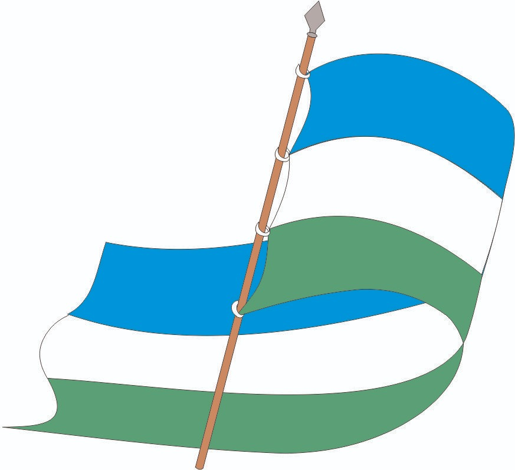
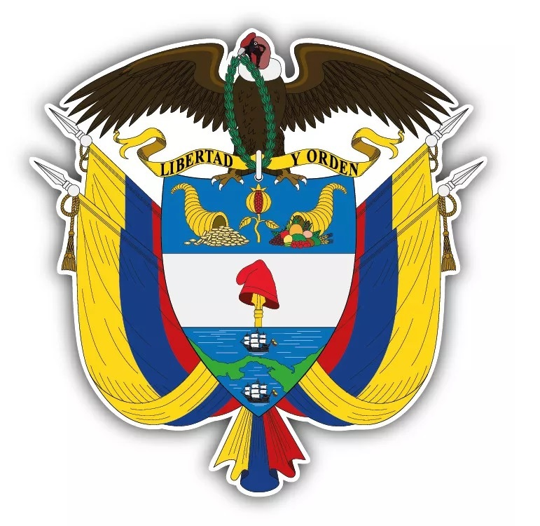

Página creada por John Erick Chamorro Gómez, estudiante del grado 8-3
Historia
La Institución Educativa San José fue fundada oficialmente el 8 de noviembre de 2002 mediante el Decreto 0676, integrando varias sedes urbanas y rurales de Ovejas, Sucre. Desde entonces, ha trabajado para brindar educación de calidad en la región de los Montes de María.
Misión
La Institución Educativa San José ofrece una educación integral apuntando a la calidad acorde a las necesidades de la comunidad educativa, ofreciendo oportunidades sin discriminación para que los estudiantes aprendan, convivan y se proyecten a la vida con las herramientas y conocimientos que le permitan servirle a la sociedad.
Visión
La Institución Educativa San José para el año 2025 será reconocida ante la comunidad educativa del Departamento de Sucre como facilitadora de la inclusión, auspiciadora de la investigación desde el aula en pro del mejoramiento de la calidad del servicio haciendo uso del talento humano y las herramientas TIC lo cual debe ser observable en el liderazgo y competitividad de los egresados.
Filosofía
La Institución Educativa San José se basa en el enfoque socioformativo, cuyo propósito es crear recursos y espacios para promover una formación humana integral e inclusiva. Busca preparar personas competentes para actuar en diversos contextos, con un proyecto ético de vida, espíritu emprendedor y valoración de la cultura, de acuerdo con las dinámicas sociales y económicas actuales.
Lema
Ciencia, emprendimiento y valores en la formación de sus hijos.
Símbolos Institucionales
El escudo de la institución representa el compromiso con el conocimiento, la cultura y la paz.

La bandera de la institución representa la paz, la pureza y la esperanza en el desarrollo de la comunidad.

El escudo nacional simboliza la pertenencia de la institución a la nación colombiana y sus valores patrios.
Cuerpo Directivo
El cuerpo directivo estará conformado por:
El Rector (a)
Dos representantes de los padres de familia
Dos representantes de los docentes de la institución
Un representante de los estudiantes del último grado (11º)
Un representante de los ex alumnos de la institución
Cuerpo Administrativo
La institución cuenta con personal administrativo y operativo comprometido con el buen funcionamiento de las actividades escolares y el apoyo a toda la comunidad educativa.
Cuerpo Docente
Conformado por aproximadamente 57 docentes, la I.E. San José cuenta con profesionales altamente capacitados en diversas áreas del conocimiento y la formación integral de los estudiantes.
El grado 8-3 está conformado por estudiantes responsables, participativos y comprometidos con su aprendizaje. Representan con orgullo a la institución en actividades académicas y culturales.